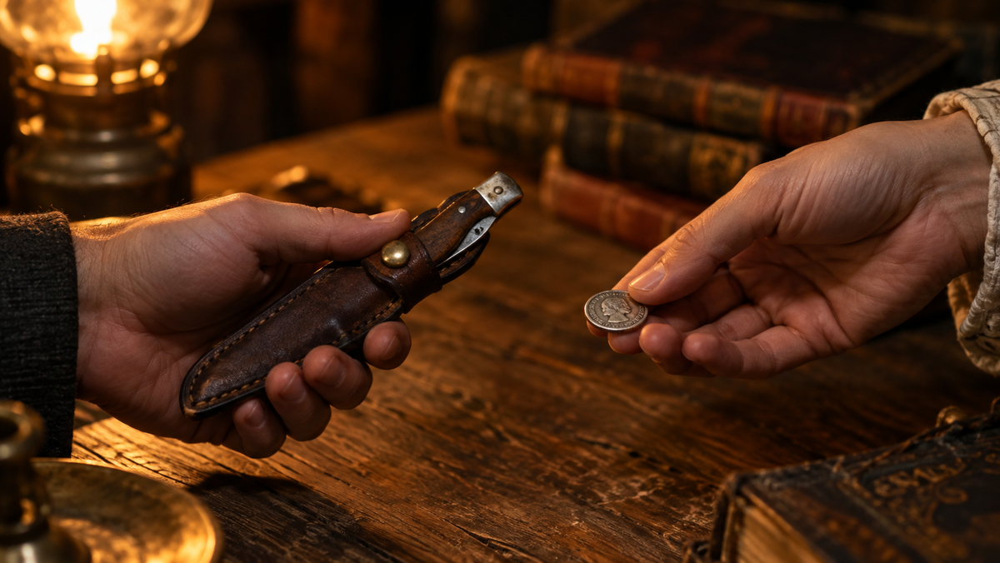

Мой дед был кузнецом. В его мастерской висел на стене старый охотничий нож с потёртой рукоятью — и я помню, как однажды сосед попросил его продать. Дед покачал головой: «Не продаётся. Это мне в подарок. Только монетку я отдал, когда принимал».
Тогда мне было лет десять, и я не понял. Какой монеткой? Зачем? Это же просто нож. Прошло много лет, прежде чем я разобрался — и оказалось, что за этим жестом стоит история в несколько тысяч лет.
Почему нож считается «опасным» подарком
Начнём с того, что нож — это не просто предмет. Это двойственный символ, который человечество несёт с собой с каменного века.
С одной стороны — он кормит. Режет хлеб, разделывает мясо, помогает выжить. С другой — он убивает. И именно эта двойственность породила десятки поверий.
В дохристианские времена ножи использовали в жертвоприношениях и магических ритуалах. Ими защищались от злых духов — но ими же и «отсекали» то, что хотели оставить в прошлом. Люди верили: нож — мощный носитель энергии, и не только хорошей.
Отсюда и главный страх: подарить нож — значит «разрезать» отношения с человеком. Разрезать дружбу. Разрезать любовь. Разрезать удачу.
В Китае и арабских странах этот запрет жив до сих пор. В Монголии острые предметы не дарят со времён Чингисхана.
Что значит подарить нож: 4 слоя смысла
Если копнуть глубже, за запретом стоят четыре разных значения — и каждое заслуживает отдельного разговора.
1. Нож как оружие. Самое очевидное. Во многих культурах нож — символ войны и насилия. Подарить его — как пожелать конфликта. Особенно если речь о боевом или охотничьем ноже.
2. Нож как «отсекатель». Народная логика проста: чем режут, то и разрезает связи. Подарил нож — «разрезал» дружбу. В Латинской Америке считают, что такой подарок — предвестник окончания отношений.
3. Нож как чужая энергия. Раньше ножи делали на заказ — под конкретного человека. Считалось, что вещь впитывает энергетику владельца. Подаренный нож — чужой, и он может «принести» беду.
4. Нож как потеря силы. В некоторых традициях нож — символ власти и силы. Даритель «отдаёт» часть своей силы вместе с клинком. Чтобы этого не случилось, нужен обмен — символическая плата.
История монетки: от Рима до наших дней
Вот мы и подошли к главному. Монетка за нож — не суеверие, а древний ритуал, который работает до сих пор.
Считается, что традиция родилась в Древнем Риме. Логика была жёсткой: если царь или военачальник отдавал тебе оружие — ты обязан был им воспользоваться, в том числе против себя. Но если он требовал монету — значит, продавал, а не дарил. И ты свободен.
Позже обычай распространился по Европе. В Англии, в Шеффилде — городе ножевых мастеров, — мать не отдавала сыну нож, пока он не давал ей монетку. Даже королева Елизавета II, принимая в подарок столовые приборы, настаивала на символической оплате.
В России и Скандинавии — та же традиция. Монетка «превращает» подарок в покупку. Нож становится твоим, а не подаренным. И связи не рвутся.
Что интересно: в Азии и на Кавказе этой традиции нет. Там нож дарят с радостью — как символ защиты и силы. На Кавказе новорождённому клали нож под подушку — чтобы отогнать болезни.

Приметы: что нельзя и что можно
Собрал главное, что стоит знать — без лишнего.
Чего опасаются:
- Дарить нож женщине — по поверьям, это «портит» её любовные отношения.
- Дарить нож маме — считалось, что это «разрезает» родственные связи и может привести к болезни.
- Дарить на свадьбу — к разводу или жизни «на ножах».
- Дарить пожилому человеку — к приближению кончины.
Что делать, если очень хочется подарить:
- Дайте монетку. Самое простое. Любая монета, любой номинал. Вы «покупаете» нож — и примета не работает.
- Вручите нож в чехле. Скрытое лезвие «обезвреживает» негатив. Вынимает нож из чехла только получатель.
- Дарите сертификат. Пусть человек сам выберет нож — тогда это не подарок «из чужих рук».
- Дарите без свидетелей. Чтобы никто не «навёл негатив» на подарок.
Другой взгляд: когда нож — лучший подарок
А теперь — то, о чём редко пишут. Нож можно и нужно дарить. И вот почему.
Награждение. Вручение именных ножей — давняя традиция. Это знак доблести и уважения.
Кавказ и Средняя Азия. Здесь нож — престижный подарок, символ защиты. Охотничьи и боевые ножи украшают камнями и узорами. Это не «разрезание связей», а пожелание силы и безопасности.
Япония. Есть традиция дарить ножи в «несчастливые годы» — якудоси. Для мужчин это 25, 42 и 61 год, для женщин — 19, 33 и 37 лет. Нож выступает амулетом, защитой в трудный период.
Просто хороший инструмент. Хороший нож — это качество, которое служит десятилетиями. Если человек увлекается кулинарией, охотой или ремёслами — такой подарок будет по-настоящему ценным.
Практический вывод
Так что же делать, если вы решили подарить нож?
Если человек суеверный — соблюдите ритуал. Монетка, чехол, сертификат. Это не «глупость», а уважение к традиции.
Если не суеверный — дарите смело. Особенно если знаете, что человек оценит качество и практичность.
Если сомневаетесь — спросите себя: зачем я дарю этот нож? Если для пользы, для дела, с добрыми намерениями — никакие приметы не сработают. Всё решает намерение, а не предмет.
В итоге
Нож — один из самых противоречивых подарков в мире. Его боятся и любят, запрещают и дарят, «разрезают» им связи — и защищают от бед.
Но если смотреть в суть: нож — это инструмент. А инструмент становится тем, чем его делает человек. Злым — если вложить зло. Добрым — если вложить заботу.
Мой дед отдал ту монетку. И нож до сих пор висит в мастерской — уже как память. Не разрезал. Соединил.
А вы бы подарили нож? Или предпочли бы что-то «безопасное»? Напишите в комментариях — мне правда интересно.